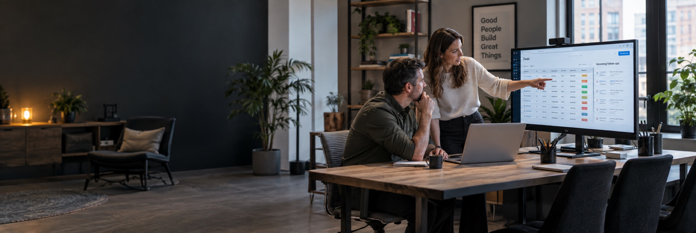

A website that fits today.
Bring your services, message, and contact experience back into alignment.
Case Studies / Section design review
Alternative designs for the “You know your business” section only. The live Case Studies page is unchanged.
A quiet ivory canvas, oversized serif headline, and a ruled service index.
Your next chapter
Our New Jersey web design and digital marketing team helps turn your business priorities into a practical project scope.
Let’s talk about your businessBring your services, message, and contact experience back into alignment.
Connect your website, search presence, and campaigns around the same priorities.
Talk through the challenge before deciding which services you need.
A warm photographic split with a dark, focused conversation panel.
 Good work begins with a conversation.
Good work begins with a conversation.A shared direction
Our New Jersey web design and digital marketing team helps turn your business priorities into a practical project scope.
Bring your services, message, and contact experience back into alignment.
Connect your website, search presence, and campaigns around the same priorities.
Talk through the challenge before deciding which services you need.
Three photographic cards turn the business challenges into clear choices.
Your next chapter
You bring the business context. We help find the right starting point.

Bring your services, message, and contact experience back into alignment.
Let’s discuss it
Connect your website, search presence, and campaigns around the same priorities.
Let’s discuss itTalk through the challenge before deciding which services you need.
Let’s discuss itA bold black section with cyan typography and three numbered priorities.
One business. One direction.
Your website, search presence, and campaigns should tell the same story. Let’s decide what needs to happen next.
Start the conversationBring your services, message, and contact experience back into alignment.
Connect your website, search presence, and campaigns around the same priorities.
Talk through the challenge before deciding which services you need.
An open, spacious question-and-answer layout that invites visitors to explore.
Does this sound familiar?
Our New Jersey web design and digital marketing team helps turn your business priorities into a practical project scope.
Tell us what’s on your mindBring your services, message, and contact experience back into alignment.
Talk about thisConnect your website, search presence, and campaigns around the same priorities.
Talk about thisTalk through the challenge before deciding which services you need.
Talk about thisA single full-width photograph with a readable dark overlay and concise closing message.

Your next chapter
Our New Jersey web design and digital marketing team helps turn your business priorities into a practical project scope.
Let’s talk about your businessAlternating light and dark panels create a strong editorial rhythm.
A practical way forward
Our New Jersey web design and digital marketing team helps turn your business priorities into a practical project scope.
Plan your next chapterBring your services, message, and contact experience back into alignment.
Connect your website, search presence, and campaigns around the same priorities.
Talk through the challenge before deciding which services you need.
An interactive dark panel lets visitors choose their challenge and see a relevant next step.
Start with your business
Bring your services, message, and contact experience back into alignment.
Discuss this priority
Connect your website, search presence, and campaigns around the same priorities.
Discuss this priorityTalk through the challenge before deciding which services you need.
Discuss this priorityA restrained process strip connects business understanding, priorities, and scope.
From business context to project scope
Talk about your audience, goals, and what no longer fits.
Decide where a stronger website or more connected marketing could help.
Turn that priority into a practical scope before the work begins.
A useful conversation before a list of services.
Let’s make a planA personal, centered invitation with dramatic serif type and a simple text footer.
To the business ready for its next chapter
When your website no longer fits, your marketing feels disconnected, or the next step is unclear, start with a conversation.
Let’s talk about your business